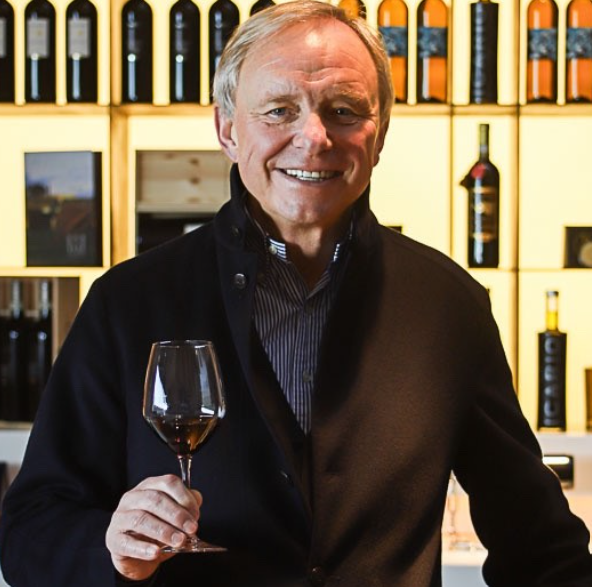
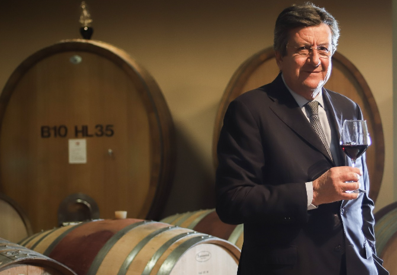

Chi Siamo:
Il percorso di Icario ha inizio nel 1999, un azienda fondata su valori familiari legati all’autenticità, alla continua ricerca della qualità con passione e dedizione, all’amore per l'arte e il design oltre al rispetto per la terra e le persone che la lavorano. In un anfiteatro di vigneti caratterizzato da un microclima unico coltiviamo le nostre uve solo con metodi naturali.
L'identità del brand è racchiusa nel suo logo, un Pegaso con la coda di tritone, fedele riproduzione di un antico bassorilievo etrusco rinvenuto nel centro storico di Montepulciano. Questo simbolo incarna perfettamente la filosofia aziendale: il legame indissolubile con la storia del territorio e l'aspirazione costante verso l'eccellenza.

FAMIGLIA - ROTHENBERG
Dal 2015 Icario fa parte della Dr.Helmut Rothenberger Holding di Salisburgo/Austria e da allora ha goduto di ingenti investimenti per distinguersi in classe ed eccellenza.

ENOLOGO - FRANCO BERNABEI
Insieme al nostro stimato enologo, il Dr. Franco Bernabei, noto a livello internazionale come “il maestro del Sangiovese” per la sua dedizione a questa qualità d’uva storica. Siamo profondamente focalizzati nel creare vini che non solo riflettano il carattere unico del nostro eccezionale territorio, ma che incarnino anche le sfumature armoniose del Sangiovese in tutte le sue espressioni. Con oltre quattro decenni di esperienza, Bernabei ha svolto un ruolo fondamentale nell'elevare i vini italiani sulla scena mondiale. I nostri vini sono una vera e propria testimonianza del suo approccio visionario, che fonde tradizione e innovazione, creando una miscela che racconta la passione e la dedizione dell'intero team Icario.
La Nostra Sostenibilità
Pilastro Ambientale
- Monitoraggio, riduzione dei consumi idrici e controllo della qualità dell'acqua.
- Riduzione dell'utilizzo di prodotti fitosanitari e eliminazione di diserbanti e insetticidi.
- Monitoraggio delle emissioni di CO₂ equivalente e definizione di obiettivi per la riduzione delle emissioni.
- Pratiche agronomiche responsabili per la tutela del suolo e del territorio.
- Gestione responsabile dei rifiuti e affidamento dello smaltimento a fornitori qualificati.
Pilastro Sociale
- Crescita personale e professionale dei lavoratori.
- Formazione continua e sviluppo delle competenze.
- Beneficenza e sostegno all'istruzione.
- Promozione della parità di genere e pari opportunità.
- Inclusione sociale e progetti educativi a sostegno di bambini e ragazzi con disabilità.
Pilastro Economico
- Monitoraggio delle performance economiche, del fatturato e dei principali canali di vendita.
- Gestione della redditività e focalizzazione sui mercati più profittevoli.
- Investimenti per la qualità, l'innovazione e lo sviluppo sostenibile.
- Valorizzazione delle produzioni, della qualità e del territorio.
- Qualificazione e selezione responsabile dei fornitori secondo criteri di qualità e sostenibilità.